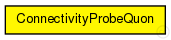

This documentation is released under the Creative Commons license
This documentation is released under the Creative Commons license(no description)
The following diagram shows usage relationships between types. Unresolved types are missing from the diagram. Click here to see the full picture.

The following diagram shows inheritance relationships for this type. Unresolved types are missing from the diagram. Click here to see the full picture.
If a module type shows up more than once, that means it has been defined in more than one NED file.
| GlobalQuonModules (compound module) | (no description) |
| Name | Type | Default value | Description |
|---|---|---|---|
| connectivityProbeIntervall | double |
interval after which to check connectivity |
|
| visualizeNetworkIntervall | double | ||
| startPlotTime | double |
when to start plotting graphs, 0 = accross the whole simulation |
|
| plotPeriod | double |
how long graphs are plotted from startPlotTime on, 0 = until simulation ends |
|
| plotConnections | bool | ||
| plotBindings | bool | ||
| plotMissing | bool |
| Name | Value | Description |
|---|---|---|
| display | i=block/network2 |
simple ConnectivityProbeQuon { parameters: double connectivityProbeIntervall @unit(s); // interval after which to check connectivity double visualizeNetworkIntervall @unit(s); double startPlotTime @unit(s); // when to start plotting graphs, 0 = accross the whole simulation double plotPeriod @unit(s); // how long graphs are plotted from startPlotTime on, 0 = until simulation ends bool plotConnections; bool plotBindings; bool plotMissing; @display("i=block/network2"); }
This documentation is released under the Creative Commons license